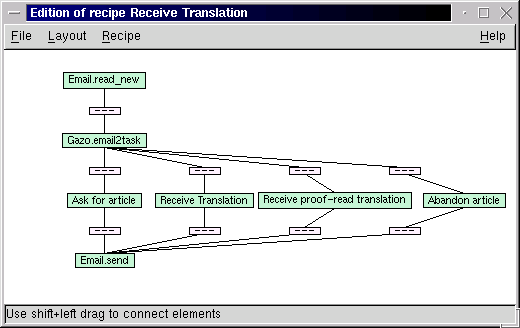
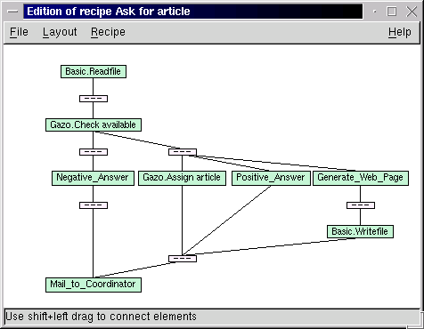

Narval is an Intelligent Personal Assistant software, released under the GNU Public License by Logilab. It was used to set up Gazo, a bot that is assisting the group of volunteers that translates Linux Gazette into French, by taking care of most of the coordination-related work. Narval features artificial intelligence and agent technologies and contributes to change the way we use the Internet and computers. Narval stands for Network Assistant Reasoning with a Validating Agent Language.
When I took over the coordination of the French translation of Linux Gazette, I was quickly faced with the very same problem the former coordinator had to deal with: time. Coordination is no brain work, but it can quickly take up a large amount of time: scan your mailbox for e-mails from people offering to translate an article, check that it is not taken yet, send back an answer, update the web page, merge all the articles into one monthly issue... It seemed to me that I was always losing most of my time with repetitive tasks and losing other people's time when not being able to send back an answer right away saying "go ahead" or "this one is already taken". In other words, I had an itch to scratch.
I can hear you say "Just write a server script and let your contributors ask for articles using HTML forms!". I had three reasons for not doing it. The first one was that some people back then did not have web access, only e-mail. The second reason was that I didn't want to cut off the translation of Linux Gazette from the rest of the translation of the LDP, hence I wanted to keep using the mailing-list[1]. Last but not least, I had already been doing some work in the field of artificial intelligence and agents and thought it would be a nice opportunity to try out a couple ideas. I named that agent Gazo, after the magazine you are currently reading.
The first version of Gazo was nothing like the Narval framework. It was a single python script that would get incoming mail from procmail. Gazo was fed a copy of every e-mail I would receive and try to figure out if it concerned Linux Gazette by looking for keywords in the subject. If it did, it would parse the subject field using regular expressions, trying to extract the demand of the user, which could be one of the following: ask for an article, send a translation, send a proof-read translation or abandon an article. A typical subject for offering to translate the article F of the issue 58 was "[lg] asking for article 58 F". In case Gazo found a match for the subject it would execute several actions.
As you can see, there's no surprise here, just writing e-mail, moving files around and keeping everything synchronized. And as you probably know already, in computer science, "without surprise" often rhymes with "can be automated" (well, could have...;-).
That first script worked well for over a year, but proved to be difficult to extend, because describing sequences of actions and testing for all possible error cases required writing a lot of code. Another itch needed scratching... but it took much longer than the first one and more than myself to deal with it. Ladies and gentlemen, please welcome the Narval Project.
When you spend most of your day using your computer to work with other people on several projects, keep in touch with friends, try not to lose ground on the news front and answer phone calls, you soon realize that what you really need is someone or something that does part of your work for you. That someone exists and is called a secretary or an assistant. They are real people, work for money, sleep at night and do not necessarily add up two ten digits numbers in 10e-9 seconds. That something exists too. There are a few instances of it in several AI labs, but unlike the former, they're not that smart. Nonetheless, let's be optimistic and call those somethings Intelligent Personal Assistants.
Narval is one of them. It borrows from advanced techniques like petri nets, rule-based systems, programming by contracts, planning, automated learning, component programming and XML, to let one release the pressure of repetitive work.
Narval executes recipes, that are sequences of actions linked by transitions. An action can be downloading a web page, performing a database query, transforming a piece of XML, sending an e-mail or whatever you may want to wrap in a few lines of python code. Conditions can be associated to transitions so that you can control the execution path through the graph representing a recipe. That gives you the basic vocabulary to control the flow of execution through different branches of your recipe and to coordinate concurrent tasks.
Using a graphical user interface named Horn (Narval is French for narwhal or narwhale, see below), a user can create a new recipe in a few mouse clicks by assembling building blocks (actions from the library, other recipes) and specifying the conditions associated to the transitions that link blocks together.
In Narval, everything is represented using XML: action prototypes, pieces of information, recipes, etc. XML provides a basic format to express the structure of the data that is manipulated. If you have ever worked with a Unix shell, you probably have realized the power of the pipes that let you do a lot of work by making a data stream flow thru filters and programs. Similarly, Narval executes recipes by passing XML fragments from an action to another, an important difference being that with Narval, the stream of execution goes thru a graph, not a sequence. At each step, pieces of XML are transformed and/or created. Narval keeps track of what did what.
In Narval, actions have complex prototypes that borrow from programming by contracts. A prototype specifies conditions on the XML nodes the action needs as input and will return as output, whether it can process a list or not, etc. For each input and output a set of XPath expressions is used to define the name of the tag, the value of an attribute, etc. When executing the actions, Narval will use these expressions to detect errors and failures and abort the recipe if it has no way to recover. That provides a permanent run-time verification mechanism that reveals itself quite useful and that Eiffel programmers already know of.
The new version of Gazo is built on top of Narval as a set of recipes. It does the same as its predecessor, but is expressed in a higher-level graphical language, is easier to modify and maintain and will benefit from the other capabilities of Narval, such as error recovery, learning (this user always takes a lot of time, do not let him have more than one article), etc. An image being worth a thousand words, I won't go thru the details of Gazo's behavior once again, just read the above description while looking at the two screen-shots below, then try to answer the following question: which one is more expressive, those graphs or 1000 lines of python script? The labels prefixed by Gazo correspond to bits of python code, the ones with underscores are XSL transformations and the others are recipes. The first screen-shot is the top-level recipe, the second one is the "Ask for article" recipe.
 What's new in this? One may object that the coordination problem described above could have been solved using a simple web application and that commands have been included in the subject of e-mails even before the first mailing-list management software. Both are true, but completely miss the point. Narval is, in a sense, an interpreter for a high-level graphical language, and draws its power and simplicity of use from features such as complex action prototypes and contracts, run-time arguments selection, rule-based mechanisms, large action library, etc.
Narval is not an application, but a framework to create your personal assistant in a few mouse clicks.
Narval's ambition is to be the best Intelligent Personal Assistant available on the Net and to grow into a software that really deserves the adjective Intelligent.
In our group of developers, we already have a Narval that helps to coordinate our projects. Each of us has its own Narval that assists him by filtering out junk ads from web pages, fetches the daily cartoons, summarizes in one page the news from different web sites, checks the agenda and sends reminders for appointments, accepts voice commands and answers using text-to-speech free software.
Applications are endless, as with any programming language. Our plans are twofold. On the one hand, integrate in the libraries all the actions we can think of: voice modem to be able to "phone home" and tell your assistant what to do, home automation protocols like X10 to control your home, cell-phone and PDA features, etc. As stated, new actions can easily be added with a few lines of python code. On the other hand, we will develop and implement the intelligent features the Narval framework was designed for, but that are missing at the time of this writing: planning, learning and cooperation with other assistants.
Planning. Once you have a sufficient number of actions, a set of basic recipes and a description of the relations between different concepts, you can start doing planning: you give your assistant a goal, like "suggest me a movie for tonight", and it will figure out a sequence of actions that will make it fulfill that goal (extract critics or rankings from a movie web site, compare to the user preferences, look up the theatre schedule and send back the suggestion to the user). The prototypes of the actions are particularly useful for this.
Learning. In Narval, everything is represented using XML. Each piece of information has a structure. Each piece of information has a timestamp. Each piece of information has a trace: what produced it, what used it, for what purpose, etc. If you have any experience with automatic learning, you know that this is a valuable setup on top of which it is possible to implement many algorithms. Using learning techniques, your assistant could realize that every Friday, you visit a web site about movies, then offer you to add that site to your Friday daily newspaper or start searching for movie critics.
Cooperation. Making two people or two assistants cooperate is often a matter of protocols. If you want them to be smarter, it becomes a problem of recognizing what the other is doing. Having recipes as explicit sequences of actions and having all the features mentioned about learning is of real value in tackling cooperation.
Narval is the only Intelligent Personal Assistant released as free software that we know of. At least three companies have commercial products that we consider related, even if they do not belong to the same category for they are not as generic nor customizable and extensible as Narval.
The first one is the software that comes with the TiVo VCR. It fetches the TV program for you, helps you to set up the recording of a show, and may even suggest a movie to watch depending on what genre of movies you have watched lately.
Prody Parrot, from Mindmaker, was shipped with Sound Blaster sound cards for some time. Working on windows only, it would help you sort your e-mail, remind you of your appointments, download web pages and summarize them, entertain you by dialoguing as if it were a psychoanalyst (ever tried Eliza in Emacs?), using speech recognition and text-to-speech. Those are quite nice features, but you wouldn't set up an assistant like Gazo with that software...
The last one is a web application named One Red Cube that acts as a personal communication hub that can redirect your phone calls, your faxes and your e-mails from one device to the other. Nothing like an assistant, but the idea of integration is there.
There are also three free software projects that work on things loosely related to Narval and worth mentioning. The GNU Bayonne project, as a Computer Telephony Integrated server, could very well end-up as a valid competitor to One Red Cube. The Mister House project is a nice home automation system that implements many features. Provided you're not afraid to write some perl code and get your hands dirty, it will let your house play a song when you walk up the stairs, ask quiz questions during breakfast and download the weather forecast when you ask for it on the phone. Last, the Piper project is building a visual shell that let you federate resources from different hosts using a graphical user interface to draw a flow chart analogous to streams and pipes.
Narval in French, narwhale in English, is a sea mammal that lives in the Arctic Ocean. The male has a tooth that grows out of his mouth and turns into a long tusk. The Narval's tusk was believed to be a unicorn horn and sold in Europe during the middle ages (and later), thus proving the existence of the unicorn.
Our prototype system was called Al, named after the HAL computer in 2001: A Space Odyssey. When we where looking for a name, we wanted to keep the Al syllable, and we ended up with Narval. It offers a nice acronym and a nice mascot.(Linux has Tux the penguin; we have Ornicar the narwhale! :-) Since the narwhale is known for its tusk, we wanted to use that name for the companion user interface, but Horn offers a better acronym (Human ORiented Narval interface), so we did as if it was a unicorn horn and not a Narval tusk.
Here are some follow-up links for the curious:
I hope this article made you feel like trying Narval and learning more about artificial intelligence, agent technologies and their applications to real-life problems. Feel free to join our mailing lists to discuss further these matters.
That's all folks, Happy Hacking!
[1] Like the Linux Documentation Project itself, the French translation project is volunteer work. The principal medium for discussion, help and most of the coordination is a mailing-list. See http://www.traduc.org/ for details.